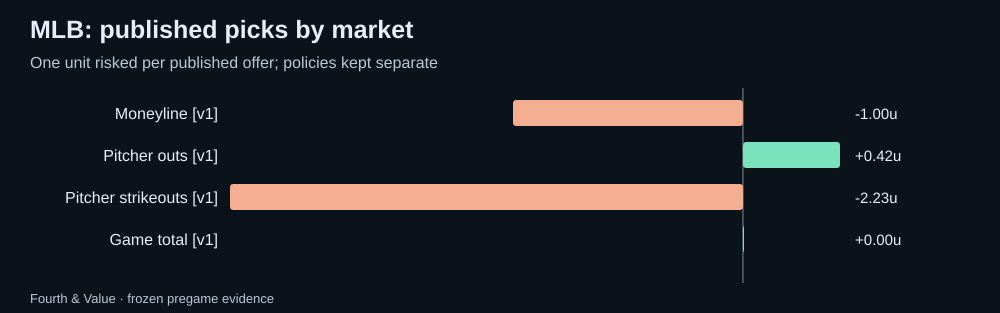

Fourth & Value · Weekly review
MLB weekly recap: 2026-09-28 to 2026-10-04
MLB saved picks and forecasts graded against official results, with market comparisons, unresolved outcomes and the next watchlist.
What this week can tell us
Partial full-board archive coverage: saved game snapshots begin 2026-10-07. The full-board sample has 0 games with saved pregame quotes; 0 have official results available. Separately, 11 published morning picks cover 7 games; 7 of those games have official results. These are archived samples, not a claim to cover every league game.
The saved evidence does not support a model-versus-market probability comparison this week.
Published morning picks
Only the final morning edition for each Eastern date is counted. One unit risked at each published price; pushes return the stake. Unresolved picks are excluded from ROI. Policy versions stay separate.
| Policy | Market | W–L–push | Net units | ROI | Unresolved |
|---|---|---|---|---|---|
| morning-edition-1 | Moneyline | 0–1–0 | -1.00 | -100.0% | 0 |
| morning-edition-1 | Pitcher outs | 3–2–0 | +0.42 | 8.4% | 0 |
| morning-edition-1 | Pitcher strikeouts | 1–3–0 | -2.23 | -55.8% | 0 |
| morning-edition-1 | Game total | 0–0–1 | +0.00 | 0.0% | 0 |

Full-board market results
One most-offered paired line per game, player and market from the final saved pregame snapshot. O/U columns count over / under / push; team markets count home win or cover / away / push. These are market outcomes, not a strategy return.
| Market | Over or home / other / push | Unresolved | Brier model / market (n) | Mean error model / line (n) |
|---|
Forecast quality
No matched probability comparison is available.
Probabilities are compared on the same non-push outcomes after conditioning the model on non-push. Missing forecasts stay missing. Error comparisons use matched observations only. Small samples and correlated markets limit what a strong week can prove.
Next week's watchlist
- Tampa Bay Rays @ New York Yankees: saved model 9.09, line 7, gap +2.09. Snapshot 2026-10-07T11:07:07.787574+00:00.
- Cleveland Guardians @ Chicago White Sox: saved model 7.41, line 8, gap -0.59. Snapshot 2026-10-07T11:07:07.787574+00:00.
- Los Angeles Dodgers @ Atlanta Braves: saved model 7.76, line 7.5, gap +0.26. Snapshot 2026-10-07T11:07:07.787574+00:00.
These are dated model-market disagreements to research, not validated edges. Check lineups, availability and current prices.
Evidence and limitations
None in the supported archived sample.
Official nonparticipants, unsupported contracts and missing statistics are unresolved, never automatic zeroes or winning unders. Standard full-game settlement is assumed; sportsbook exceptions require separate review. MLB pitcher props require an official starting appearance. Team totals are not part of the supported archive. Results may be revised when official feeds are corrected.
Download every graded row and source snapshot · Current MLB board · How updates work · All recaps